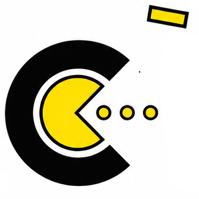
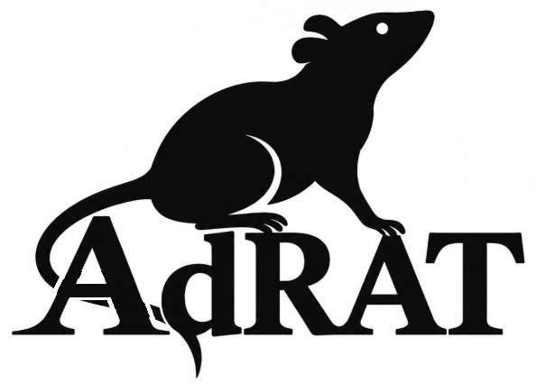

COMPUTER SCIENCE • SOFTWARE • ENGINEERING
Hi, I'm Ellie-Mae Dawson
Developer & Computer Science Enthusiast
I build software, experiment with systems, and enjoy solving challenging problems through programming and engineering.
Featured Projects
View all →RCUT
A C/C++ OpenGL rendering toolkit designed to provide the core systems needed to develop games.
Learn more →Pacman Raycasted
A raycasted interpretation of the classic Pac-Man concept, developed using a DDA raycasting algorithm.
Learn more →AdRAT
A developing administrative tool for centralized management of devices across networked environments.
Learn more →Technologies
View skills →Interested in my work?
Explore my projects or learn more about my background and experience.
About Me
Hi, I'm Ellie-Mae.
I am currently studying Computer Science at A Level, with a strong interest in understanding how computers work beyond just writing code. What initially drew me to the subject was problem solving, but over time this has developed into a deeper curiosity about low-level systems and how hardware and software interact.
I have particularly enjoyed applying this through practical projects, including my involvement in FIRST LEGO League, where I designed and built robotic systems. One of my more challenging projects was creating a modular LEGO-based demultiplexer, which strengthened my ability to break down complex problems and develop structured solutions.
Alongside this, I have developed a strong interest in teaching. Volunteering as a Teaching Assistant has allowed me to support younger students and has reinforced my desire to eventually teach Computer Science. I find it rewarding to help others understand concepts and build confidence in their own abilities.
Outside of the classroom, I am working towards becoming a Duke of Edinburgh leader, which reflects my interest in leadership, teamwork, and personal development.
I am particularly interested in electronic engineering, especially the design of CPU microcircuits, and I hope to pursue this to a PhD level. I am motivated by challenging problems and enjoy pushing myself to learn concepts beyond the standard curriculum.
Projects

Rendering Core Utility Toolkit - OpenGL Extension -
RCUT is the main game engine being developed for GPSoftware. It is designed to provide the core rendering, input, and engine systems needed to build games efficiently in C/C++ with OpenGL.

Pacman Raycasted
Pacman Raycasted was originally developed for my computer science NEA. It uses a DDA raycasting algorithm to create an exciting, slightly Horror-Esk versionn of the Classic Pac-Man Arcade Game

The Solar Project
The solar project is a API-Based project to replace the back-ed of RCUT, and to end up developig SolarStorm (Which is a visual game engine of the RCUT code)

AdRAT
AdRAT (Administrative Remote Administration Tool) is a tool currently under development, designed to provide centralized management and control of multiple devices across small or large networks. It is intended for environments such as schools, businesses, and home networks, where administrators may need to monitor, manage, and maintain connected devices from a central interface.
Education
Currently studying Computer Science at A Level.
Skills
Technical Skills
- Programming - listed above
- Libraries and Tools - Including GLUT, Qt (C++ and Python)
- Databases - Basic SQL, MySQL, SQLite
- Concepts - Object-oriented programming, basic data structures, modular design
- Hardware & Engineering - Circuit design, robotics systems (FIRST LEGO League experience)
Problem Solving & Engineering
- Problem Solving - Applied through programming and robotics projects
- System Design - Built modular systems including a LEGO demultiplexer (1-to-8 attachments)
- Debugging - Iteratively improving and refining solutions
Teaching & Leadership
- Teaching Assistant - Supporting phonics learning for Year 7 students
- DofE - Working towards a leadership role
- CCF - Aspiring member
- Interest - Strong focus on teaching Computer Science and mentoring
Personal Skills
- Problem Solving - Logical and analytical thinking
- Deadlines - Able to meet important deadlines under pressure
- Learning - Always aiming to take on more challenging concepts
- Teamwork - Communication and collaboration skills
Practical & Creative Skills
- Navigation - Map reading, compass use, hiking
- Creative - Photography and painting
- Outdoor Skills - Expedition and teamwork experience